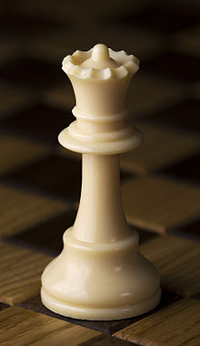
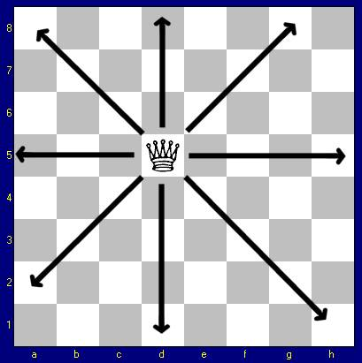

Nel gioco degli scacchi la donna chiamata anche regina è considerato il pezzo più potente, essendo quello che gode della mobilità maggiore. La donna è stata usata anche per sviluppare un rompicapo matematico, chiamato Rompicapo delle otto regine.

